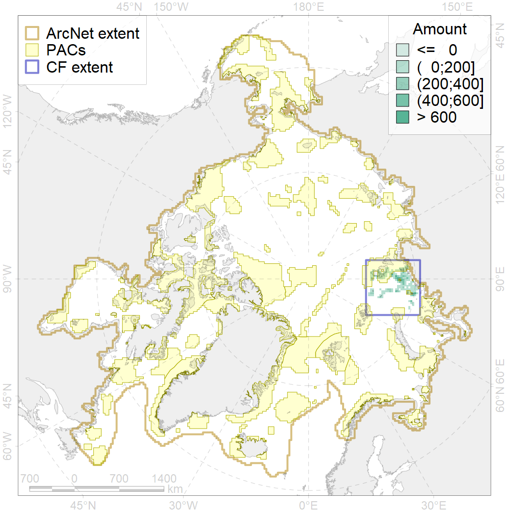
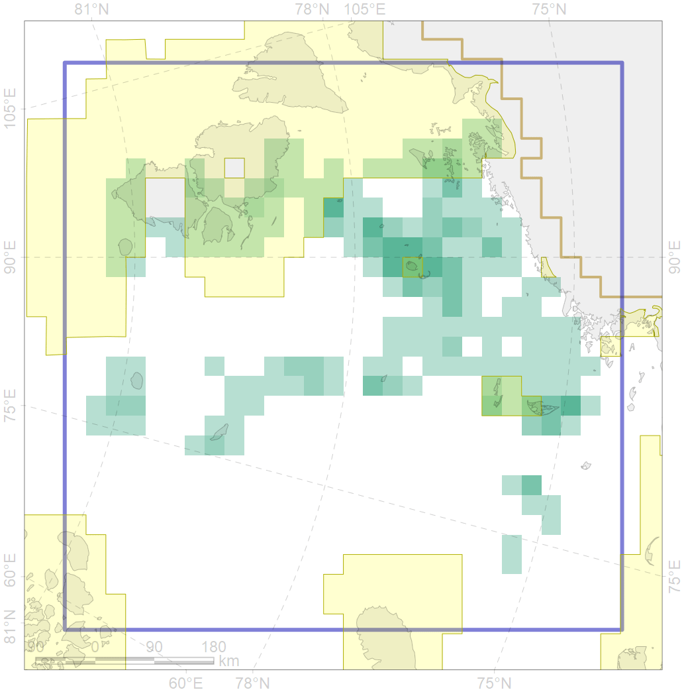

7108

| CF code | 7108 |
| CF name | II.1.1.2. Eastern Kara insular areas and banks at middle and outer shelf |
| Time Period | At least last 100 years |
| Source(s) | Harris et al., 2014; Carmack, Wassmann, 2006 |
| Seasonality | 1-12 |
| Depth Horizon | Sea floor |
| Methodology | Data obtained from the literature |
| Use Restrictions | Open access |
| Author Name | V. Spiridonov, W. Merritt |
| Notes | |
| Scenario’s Target | 0.1776245 |
| Target Achievement | 0.268 (Scenario: 150.8%) |
| PAC | Share of the Total Amount within the PAC | Share of the Target Achievement for the ArcNet | PAC’s Contribution to the Target Achievement |
|---|---|---|---|
| 14 | 18.2%18.3% | 86.6%86.8% | 57.4%57.6% |
| 15 | 7.0%11.3% | 30.4%32.0% | 20.2%21.2% |
| inner | 25.2%29.5% | 117.0%118.7% | 77.6%78.8% |
| outer | 74.8%77.8% | 33.8%43.8% | 22.4%29.1% |
| † supplement values are for area consistence whereas principal values are for Accenter compatible gridded stats |